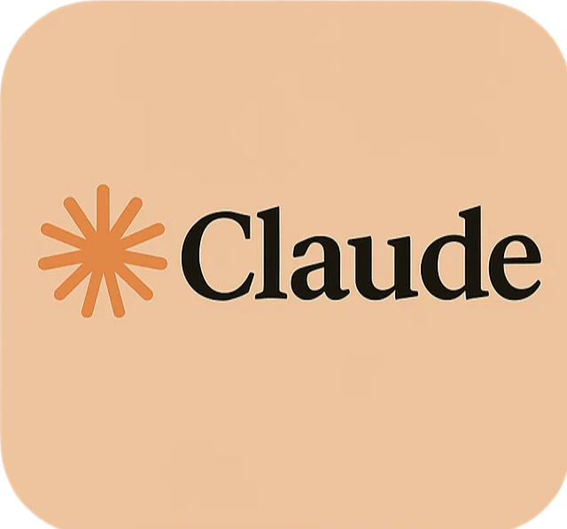
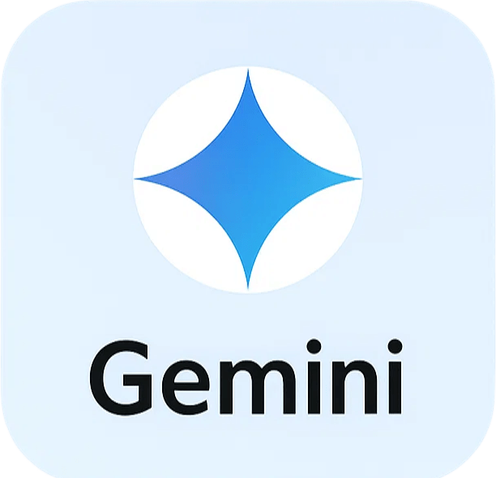
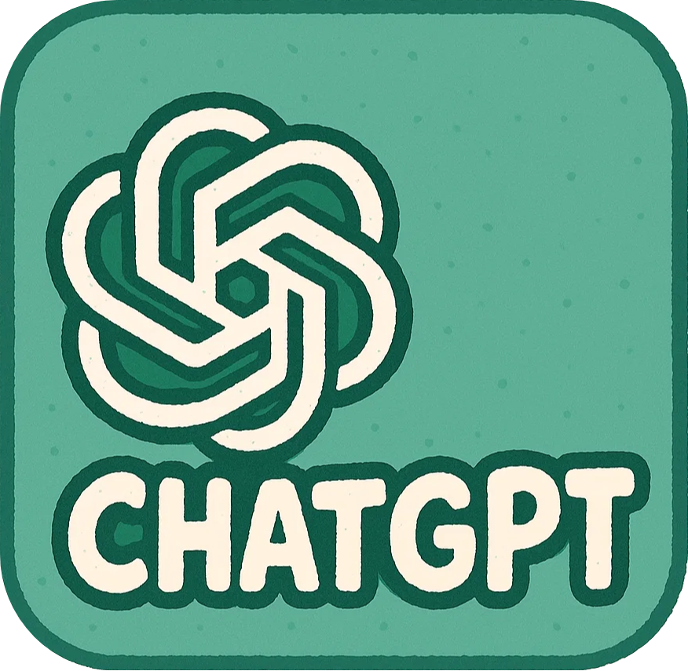
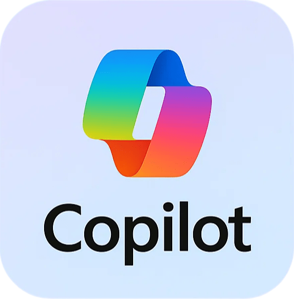

MentorIA
Generador de Prompts Educativos
Rol del docente
Seleccione un rol
Docente universitario humanista
Formador en ciudadanía crítica
Mediador entre saberes y realidades sociales
Facilitador del diálogo intercultural
Acompañante del aprendizaje autónomo
Promotor del pensamiento crítico
Diseñador de experiencias de aprendizaje
Tutor de investigación formativa
Evaluador del aprendizaje
Diseñador curricular
Investigador académico
Coordinador académico
Asesor de tesis
Docente reflexivo sobre su práctica
Gestor de la integridad académica
Contexto: Tema general o específico
Requerimiento: Tipo de actividad
Seleccione una actividad
Explicación / Conceptualización
Diseño de actividades / metodologías
Planificación docente
Evaluación
Retroalimentación
Estimulación creativa
Aplicación / Resolución
Análisis crítico
Investigación educativa o disciplinar
Evaluación de la enseñanza
Formación en valores y ciudadanía crítica
Interdisciplinariedad / Aprendizaje-servicio
Autonomía y metacognición del estudiante
Formato de salida
Seleccione un formato
Texto explicativo estructurado
Guion de exposición o clase
Objetivos o resultados de aprendizaje
Cronograma o planificación semanal
Preguntas de evaluación (test o abiertas)
Rúbricas de evaluación
Estudio de caso o problema para resolver
Preguntas generadoras para análisis crítico
Dilema ético o debate
Actividad creativa o interdisciplinaria
Guía de trabajo o actividad práctica
Plantilla de sesión de clase o ficha didáctica
Marco teórico o esquema temático
Pregunta de investigación
Diario reflexivo o bitácora docente
Encuesta o instrumento de retroalimentación
Comentario de retroalimentación personalizada
Guía de autoevaluación o metacognición
Propuesta de proyecto de aprendizaje-servicio
Mapa de integración interdisciplinar
Competencia general
Seleccione una competencia
Pensamiento crítico
Investigación para la incidencia
Liderazgo trascendente
Ciudadanía global
Restricciones o criterios
Generar Prompt
Prompt generado:
📋
Enviar prompt a:



